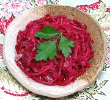

|
Pickled Red CabbageEngland | ||||
| Makes: Effort: Sched: DoAhead: |
8 app * 2 days Must |
This Pickle is often served as a side dish to Scouse and other English meat stews, along with Pickled Beets or as an alternative to them. | |||
|
|
2 ----- 2 1/2 1 1 1 ----- |
# --- c T T T t --- |
Cabbage, red -- Pickle Vinegar (1) Sugar Sea Salt Pickling Spice (2) Pepper, black ---------- |
Make: - (2 days - 25 min work)
|